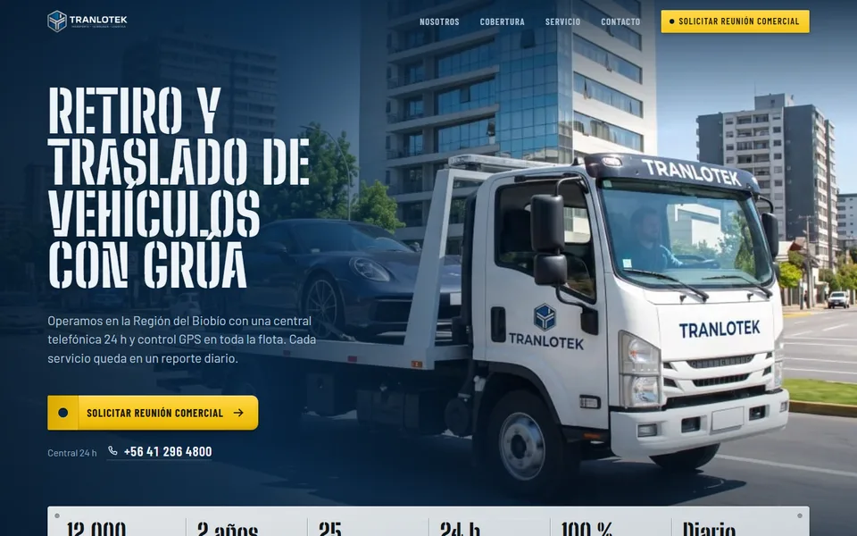

Versiones de la landing de Tranlotek
-
 Ver versión
V1 Live
Ver versión
V1 LivePrimera versión publicada: portada a sangre con barra flotante, cifras animadas, torre de control de la central 24 h, Gran Concepción, la grúa a pantalla completa y formulario de contacto.
- Hero a sangre
- Torre de control
- Gran Concepción
- Formulario
-
 Ver versión
V2 Live
Ver versión
V2 LiveHero claro con borde curvo (formato bairesdev.com), cifras con gráficos animados, sectores por pestañas, mapa del Gran Concepción y formulario con validación.
- Hero claro
- Cifras animadas
- Sectores
- Mapa animado
-

Ver versiónV3 Live NuevaRetiro y traslado de vehículos: portada con la flota y las 6 cifras, la grúa en ruta, mapa del Gran Concepción, las cuatro etapas del traslado y una grúa que levanta el formulario de contacto.
- Flota en portada
- Gran Concepción
- 4 etapas
- Grúa con gancho